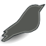

Introduction
KDScript is a custom script module for the Dark Engine games Thief: The Dark Project and Thief II: The Metal Age. It provides access to the new script services available with the unofficial NewDark patch, including dynamic weather and fog and nonlinear campaigns. It offers custom HUD elements including quest arrows, statistic meters, and tool sights. It also includes other useful features such as automatic subtitling of AI speech and voiceovers. The included mission demonstrates the scripts in this module; load this ZIP file as an FM to try it.
This is version 0.7.0 of KDScript, released on 2013-09-01 as KDScript‑0.7.0.zip. (See the version history for what has changed.) This module is in a public beta testing phase, and the script specifications below may change prior to the first official version. If you are interested in using any of these scripts in your mission, please follow my announcements on TTLG so you can have an up-to-date version. I would be glad to assist you in using these scripts and testing them in your mission; see my contact information below.
This module owes its existence to Telliamed's robust base libraries and to our NewDark benefactor Le Corbeau. Thank you!
Requirements
This module works with one of the following games and engine versions on one of the following operating systems:
- Game

- Thief II: The Metal Age (T2/TMA)
- Thief Gold (TG) *
- Thief: The Dark Project (T1/TDP) (Not tested.) *
- Engine
- 
- NewDark patch version 1.20 or higher
- NewDark 1.19 (This version has significant bugs. Some features are not available.)
- Operating system
- Windows XP or later version
- Linux with a recent version of Wine
* A version of KDScript is available for use with Thief Gold (TG) and Thief: The Dark Project (T1/TDP). Not all of the scripts and features are available for these games; see individual scripts for details. Note that the module has not been tested with T1, only with TG. The TG/T1 version of the module, along with a limited demo mission, is located in the thief1 directory inside this ZIP file.
Using the scripts
To use these scripts while creating a mission, they must be available to the Dark Engine. Place the KDScript.osm and ThiefLib.osl files in your mission's root (main) directory, to be included in the distributed ZIP file. (No other files from the KDScript archive are required.)
Next, open your mission in DromEd and add this module with the command script_load KDScript. You are now ready to add the scripts in this module to archetypes and objects.
Many of these scripts are configured using Design Note parameters in addition to standard properties and links. See that section for more details.
The source code for KDScript and its ThiefLib support library are available on GitHub. This module is licensed under the GPL, which usually requires you to distribute it along with its source code. However, you may distribute the module in a fan mission without including the source; see the legal notes below.
If you have any questions or issues related to these scripts, please post them in the KDScript thread on TTLG, contact me by private message on TTLG, or email me at <kevin AT kdau DOT com>.
Credits and legal notes
Copyright © 2012–2013 Kevin Daughtridge. The script module is licensed under terms of the GNU General Public License. The demo missions may be distributed in any way as long as it remains unmodified and I am credited for it. The module and missions are provided “as is” without warranty of any kind, either expressed or implied. This level was not made and is not supported by Looking Glass Studios or Eidos Interactive.
In addition to your rights under the GPL, you may distribute unmodified copies of KDScript.osm along with fan missions and expansion packs intended for use with Dark Engine based games without providing the source code for this software. The fan mission or expansion pack must be distributed in compliance with the terms of the DromEd End-User License Agreement issued by Eidos Interactive. The mission or pack must also include a notice in its documentation that it uses KDScript and that KDScript is copyright © 2012–2013 Kevin Daughtridge (kdau).
The following works of others are included in or inspired the script module or demo mission:
- The Dark Engine and the original games using it are the work of Looking Glass Studios. This module must be used in compliance with the game and DromEd licenses from LGS and Square Enix.
- The “NewDark” patch (1.19, 1.20, 1.21) to the Dark Engine, including new features accessed by these scripts, is the work of the pseudonymous “Le Corbeau”. The demo mission contains corona designs and textures from the NewDark distribution.
- KDScript's underlying ThiefLib library is based in part on Public Scripts, the Object Script Library, and Dark Hook 2 by Tom N. Harris (Telliamed). It also includes a modified version of his lg library, which derives in part from earlier work by GayleSaver and Totality.
- Subtitle support is based on ideas from Nameless Voice and others.
- The NewDark “raven” icon in this documentation is by Unit66 and available under CC-BY-SA 3.0.
- The T2 demo mission includes a smoking pipe object by Targa (first site, second site), enhanced water textures by Renzo Thönen (Eshaktaar), and a rain ambient by gigagooga.
Copyright © 2012–2013 Kevin Daughtridge.